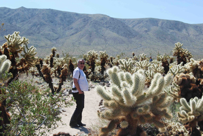
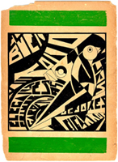

|
|
|
Latin America: The Last Avant-Garde A Conference Sponsored by the History of Art Department at Yale University, the Art History Department at the CUNY Graduate Center, and PART, the online student journal of the CUNY Art History Department April 4-5, 2008 |
|
In Memoriam: Olivier Debroise On May 7th 2008 we lost the critic, curator, filmmaker and author Olivier Debroise, whose film A Banquet at Tetlapayac, was screened at this conference. He was a much-loved friend and mentor to many of us who participated in the event. This archive is dedicated to his memory. “Olivier
Debroise (1952–2008): Intractable Foreigner”  Olivier Debroise, Joshua Tree, California, 2008 (Photo: Frida Kahlo for the Guerilla Girls) |
|
Latin America: The Last Avant-Garde  This symposium is organized around the conceit that
Latin America is the site of the last avant-garde. We are not interested
in the truth or falsity of this conceit, but how it operates as
an interpretive paradigm. In several key episodes of Latin American
art, artists and critics have positioned the region as a privileged,
even mythological, site for the final realization of an avant-garde
project initiated in Europe. In other instances, avant-gardism provided
a discourse of rupture by which Latin American artists aligned themselves
with revolutionary, utopian, and universalist aims while disavowing
European cultural dependency and advancing a claim for the unique
character of the national or regional avant-garde. In both cases,
the original military metaphor of the avant-garde, with its associations
of innovation, radicality, and novelty, has been brought to bear
on artistic movements and individual experiments that have self-consciously
figured “lastness” as a strategic paradigm.
The conjoining of these two impulses within the Latin American avant-garde forces into view key structural contradictions between modernity, Modernism, and the avant-garde. How is characterization of the Latin American avant-garde as either unitary or merely reactive complicated by the avant-garde's fundamentally international character? How has avant-gardism intersected with political, economic and military pressures particular to the region? How have Latin American artists engaged in interdisciplinary collaborations and expanded networks of informational flow in order to catalyze new, or “final” articulations of the avant-garde? How have artists exploited temporal delay and geographic marginality as aesthetic and conceptual gambits, and how might such articulations debunk the very notion of the avant-garde's originality? In recent years, Latin American modern art has reemerged as a priority within academic departments and museum collections, an interest that coincides with a shift away from regionalism and identity politics as the central tropes of its study. In this sense too, Latin American art can be considered the “last,” or most recent, avant-garde to be canonized (or colonized) within art historical Modernism. How can new studies and interpretations of Latin American avant-garde art allow us to refigure histories of “prewar” and “postwar” art, modernity and cultural exchange, theories of the avant-garde and neo-avant-garde, and other modernist methodologies? How might recent theoretical models posited in exhibitions such as Inverted Utopias and The Geometry of Hope such as the “constellation,” “regressive utopia,” or “deformed modernity” impact the study of avant-gardism in Latin America? At a current moment in which the dialectic between “local” and “global” has taken center stage, how might art historians help shape a history of the region that accounts for and challenges larger threads of avant-gardism? --Dan Quiles and Irene Small |
|
| Latin
America: The Last Avant-Garde Friday, April 4, 2008 2:00 p.m. Opening Remarks: Irene Small, Yale University Panel 1: Deploying Avant-Garde Utopias Jennifer Josten, Yale University Dana Ospina, Stanford University Gina McDaniel Tarver, University of Texas, Austin Jodi Kovach, Washington University, St. Louis Respondent: Claudia Calirman, Parsons School of Design 4:00 - 6:00 p.m. Screening 6:00 p.m. Reception 6:45 p.m. Keynote lecture: “The Last Avant-Garde: Radio Poetry” Latin America: The Last Avant-Garde Saturday, April 5, 2008 11:00 a.m. Opening Remarks: Daniel Quiles, CUNY Graduate Center Panel 2: Archives And Visibilities: Exhibiting The Avant-Garde Fabiola Martínez Rodriguez, St. Louis University, Madrid Tarek Elhaik, Rice University Taína Caragol, CUNY Graduate Center and Isobel Whitelegg,
Essex University Respondent: Katherine Manthorne, CUNY Graduate Center 2:00 p.m. Panel 3: Locating Abstraction Taisa Palhares, Pinacoteca do Estado de São Paulo, Brazil Abigail McEwen, Institute of Fine Arts, New York University Fernanda Pitta, Universidade Cidade de São Paulo, Brazil Megan Sullivan, Harvard University |
|